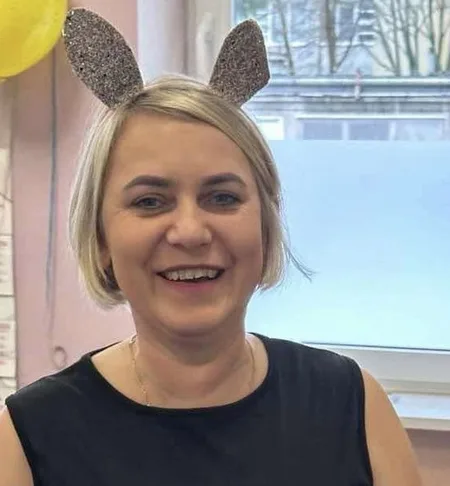
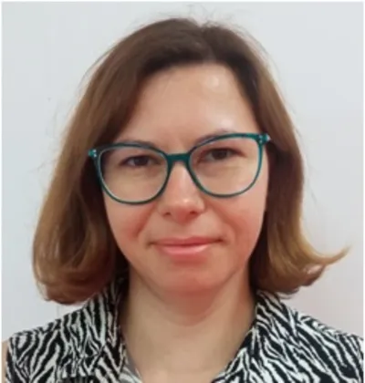
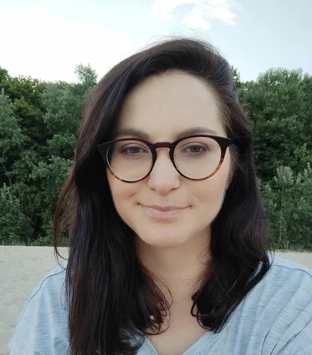
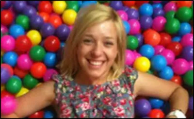
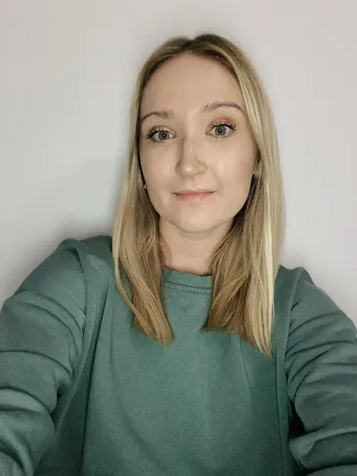
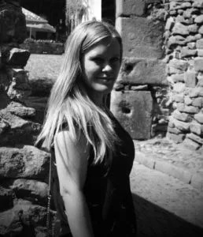
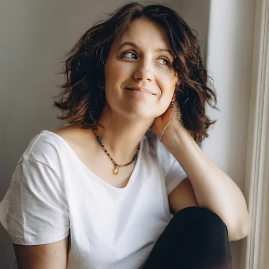

Stała, zgrana drużyna
Wykwalifikowana, zgrana kadra — wszyscy specjaliści „na miejscu", codziennie do dyspozycji dzieci i rodziców.

Nasz zespół
Poznaj naszych nauczycieli
Bardzo dobrze wykwalifikowana kadra, wszyscy specjaliści "na miejscu" i do dyspozycji dzieci i rodziców.
Dyrekcja
Dyrektor przedszkola
Agnieszka Mering
Dyrektor, pedagog, nauczyciel wychowania przedszkolnego
Założycielka i dyrektorka „Czarodziejskiego Dworku" od 2003 roku. Absolwentka Edukacji Przedszkolnej oraz Polityki i zarządzania oświatą na UW, a także pedagogiki (WSH Pułtusk) i edukacji dla bezpieczeństwa (WSNS). Prywatnie mama dwóch nastolatek — uwielbia taniec i podróże.
Edukacja
Zespół pedagogiczny

Małgorzata Bartoszewska
pedagog, terapeuta
Magister pedagogiki przedszkolnej z terapią pedagogiczną; ukończyła roczny kurs Marii Montessori i kurs dramy. Ma wieloletnie doświadczenie z dziećmi w wieku przedszkolnym i szkolnym. Bliska jej myśl Konfucjusza: „Pozwól mi działać — a zrozumiem".

Paulina Chłap
pedagog specjalny, nauczyciel
Ukończyła integracyjne wychowanie przedszkolne i wczesną interwencję (APS). Pracowała z dziećmi z autyzmem w Fundacji Synapsis; szkolona w komunikacji wspomagającej (PECS, Makaton). W Dworku od 2013 roku prowadzi zajęcia grupowe i indywidualne.

Ewelina Gomoła Bieniek
nauczyciel, pedagog specjalny
Absolwentka APS i UŚ, w Dworku od 2013 roku. Prowadzi zajęcia pedagogiczne, TUS-y i jogę dla dzieci; doświadczona w pracy z dziećmi z ASD. Stale się szkoli (Jogopedia, NVC, Kids' Skills). W pracy stawia na empatię i mocne strony dziecka.
Olga Jakuć
pedagog specjalny, terapeuta
Pedagog specjalny z dużym doświadczeniem w pracy z dziećmi ze spektrum autyzmu. Prowadzi integrację sensoryczną, terapię ręki, TUS i zajęcia taneczne. Bliska jej Pozytywna Dyscyplina — zamiast kar i nagród buduje z dziećmi relację opartą na zaufaniu.

Anna Jurska
pedagog, oligofrenopedagog
Terapeutka integracji sensorycznej; ukończyła kurs „Autyzm: małe dziecko — duża sprawa" (Synapsis), PECS, TUS i metodę Weroniki Sherborne. Pracowała w przedszkolu terapeutycznym Synapsis, w Dworku od 2015 roku. Prywatnie mama Tadzia.
Elwira Kucharczyk
psycholog, terapeuta
Psycholog z przygotowaniem pedagogicznym (SWPS). Od 2009 roku pracuje z dziećmi ze spektrum autyzmu jako terapeuta indywidualny i grupowy. Uczestniczka licznych szkoleń z zachowań trudnych, komunikacji wspomagającej (PECS) i treningu kompetencji społecznych.
Agnieszka Mazur
nauczyciel, pedagog specjalny, terapeuta
Pedagog specjalny i terapeutka SI (APS), z pedagogiką korekcyjną i przedszkolną. W Dworku od 2007 roku. Wierzy, że ruch jest motorem rozwoju — stąd nacisk na aktywność: terapia ręki i stopy, korektywa, integracja bilateralna.
Monika Sawczuk
nauczyciel wychowania przedszkolnego
Absolwentka WSP ZNP (wychowanie wczesnoszkolne z językiem angielskim). W Dworku od 2015 roku. Ceni w dzieciach spontaniczność i ciekawość; najważniejsze jest dla niej, by każde czuło się bezpieczne i szczęśliwe.

Natalia Łucka
pedagog specjalny
Magister pedagogiki specjalnej (APS). Doświadczenie zdobywała w klasach 1–3, wspierając dzieci ze spektrum autyzmu. Ukończyła terapię ręki, AAC i pracę z dzieckiem z ADHD. Tworzy atmosferę spokoju i akceptacji — wierzy, że każde dziecko ma niepowtarzalny potencjał.
Terapia i wsparcie
Zespół terapeutyczny

Joanna Golec
nauczyciel, psycholog
Psycholog kliniczny (UMCS). Od ponad 10 lat pracuje z dziećmi w spektrum autyzmu — m.in. w Przedszkolu Terapeutycznym Synapsis i Centrum Terapii Simuli, prowadząc terapię indywidualną i Treningi Umiejętności Społecznych. W pracy stawia na empatię, otwartość i ciekawość wobec dziecka.
Ewa Linowska
psycholog, psychoterapeuta
Absolwentka psychologii UW, certyfikowana psychoterapeutka Instytutu Psychoanalizy i Psychoterapii. Pracuje z dziećmi, młodzieżą, dorosłymi, parami i rodzinami; swoją pracę poddaje regularnej superwizji. Studentka seksuologii klinicznej (WUM).
Marta Byszko
neurologopeda, pedagog specjalny
Absolwentka APS i SWPS. W Dworku od 2011 roku — diagnoza i indywidualna terapia logopedyczna, autorskie programy terapeutyczne, wspieranie komunikacji dzieci ze spektrum autyzmu (PECS). Szkolona m.in. w zaburzeniach połykania i metodzie werbotonalnej.
Małgorzata Kunat
neurologopeda, logopeda ogólny i kliniczny
Absolwentka Logopedii Ogólnej i Klinicznej (UW/WUM) oraz neurologopedii z wczesną interwencją. Odbyła staże neurologopedyczne w warszawskich szpitalach. Neurologopedia to jej pasja — stale się dokształca, by terapia była skuteczna i atrakcyjna dla dziecka.
Języki, ruch i muzyka
Specjaliści i lektorzy
Anna Sławikowska
fizjoterapeutka
Absolwentka Akademii Wychowania Fizycznego w Warszawie, fizjoterapeutka i terapeutka integracji sensorycznej. Od wielu lat z pasją pracuje z dziećmi, stale poszerzając wiedzę o rozwoju ruchowym na kursach, szkoleniach i konferencjach.
Monika Szymańska Klimowicz
nauczyciel języków
Absolwentka polonistyki i romanistyki UW, z certyfikatem C1 z języka angielskiego. Wyspecjalizowana w pracy z uczniami o specjalnych potrzebach edukacyjnych; łączy kreatywność animatorki z metodyką, by przełamywać stereotypowe podejście do nauki języków.

Olga Czarnecka
nauczyciel j. francuskiego
Nauczycielka francuskiego od 2004 roku, absolwentka filologii romańskiej UW i egzaminatorka DELF. Francuski zna od dziecka — chodziła do szkoły francuskiej. Najmłodszych uczy przez gry, zabawy ruchowe i piosenki.
Anna Maliga-Poprawska
rytmika i umuzykalnienie
Absolwentka Akademii Muzycznej w Warszawie (Rytmika) i Studium Carla Orffa; uczestniczka międzynarodowych kursów Orffa (Salzburg, Nitra, Pilzno) oraz metody Gordona. Łączy metody Orffa, Dalcroze'a i Gordona z pasją — gra, śpiewa, tańczy i komponuje piosenki dla dzieci.
Cała kadra na miejscu
Wszyscy specjaliści dostępni codziennie — nie musisz wozić dziecka na dodatkowe terapie.